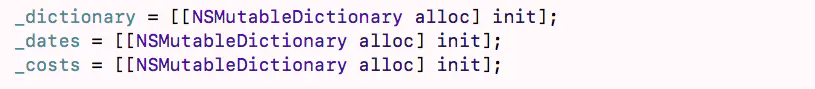
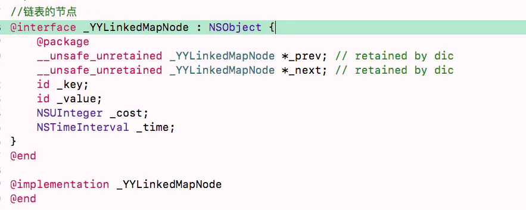
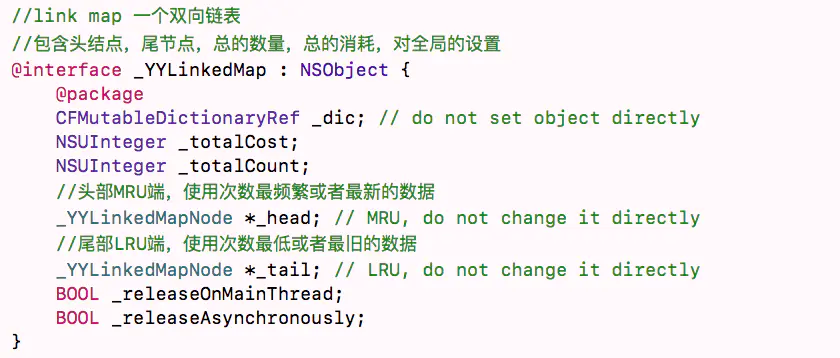
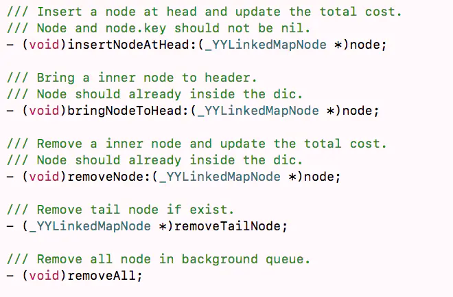
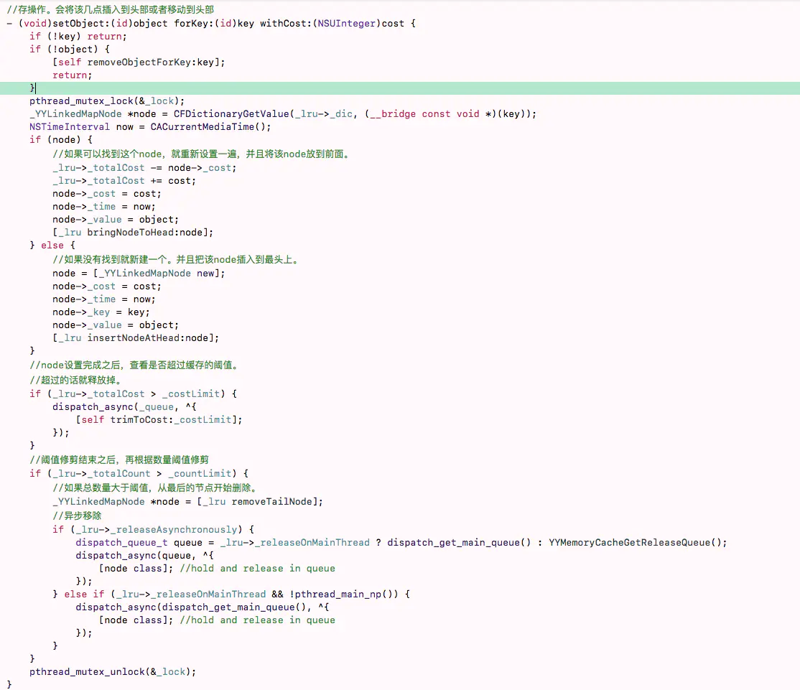
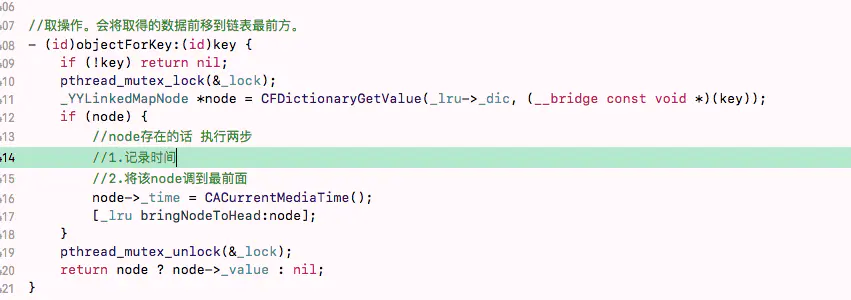
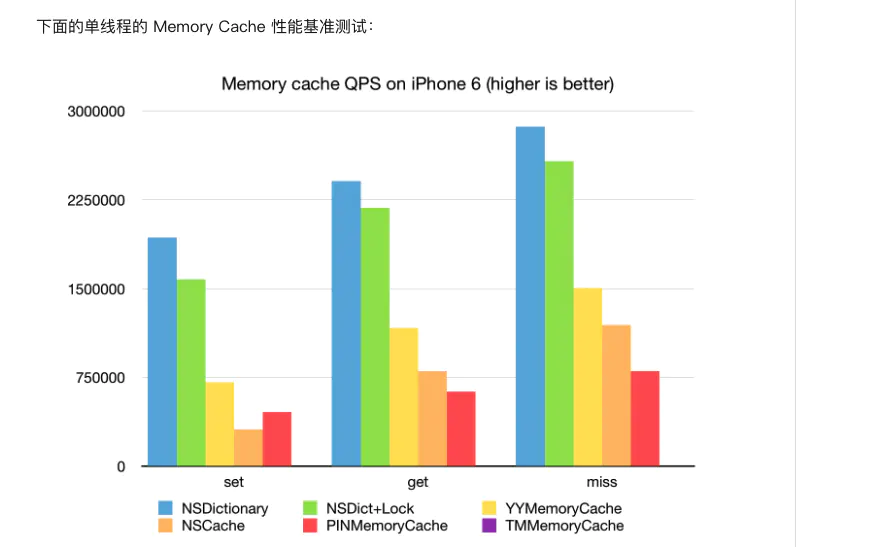

iOS内存缓存的方案比较
主要关注这三个框架的内存缓存。以及LRU算法的实现。
一：TMMemoryCache
1.1 TMMemoryCache简介
TMCache相比较于NSCache，新增了memoryCache的缓存大小，缓存时长的控制，进入后台和收到内存警告时的处理。 TMCache的内存缓存实现是用三个字典来实现的。
第一个是存储缓存对象，第二个字典是用来存储缓存时效，第三个使用来存储缓存大小。 TMCache的内存缓存分为同步缓存和异步缓存。 全局维护了一个 concurrent queue ，所有的读写操作都放在这里面。运用了 dispatch_barrier_async来保证任务的顺序执行。在同步读写的方法中，运用信号量来保证线程的同步。
但是TMCache的内存缓存没有做并发线程的控制，如果大量向concurrent queue中分发任务，会开很多线程出来。并且线程的切换是个非常消耗性能的事情，应该控制线程的并发量。
大量线程的创建、销毁、运行会挤占主线程的时间。造成卡顿等现象。
并且TMCache中使用信号量充当锁来将异步转为同步，在异步任务中调用block发送信号，当CPU资源因为大量线程的处理而资源耗尽的时候，就会有block无法执行，而造成死锁的风险出现。
还有一点TMMemoryCache的同步实现是将任务丢到别的线程去执行，这里有线程切换的重操作，所以性能会是一个瓶颈。
1.2 LRU的实现
1.当将数据进行缓存的时候，会根据设置的内存阈值进行淘汰。根据date，找出时间最久的那个，然后淘汰，直到新数据放入之后小于阈值。
2.当设置了 ageLimit之后，会开起一个轮询，每隔ageLimit段时间，会查找一次是否有过期的缓存数据，然后予以清除。查找过期缓存数据是将date字典通过value进行排序。转换为数组。然后根据key遍历数组。找出过期的key，然后清除字典。
缺点：
1.大量开起线程，没有做线程的数量控制。
2.有死锁的风险。
3.LRU算法的低效。
4.大量的切换线程造成的性能瓶颈。
TMCache已经放弃维护了。
二：PINMemoryCache
2.1 PINMemoryCache简介
PinCache是在TMCache放弃维护之后的一个框架，它保留了TMCache的大部分API。并且修改了上述的TMCache的所有的缺点。
1.PinCache 实现了一个自己的queue和group，控制了线程的并发量。
2.使用互斥锁对数据的操作进行加锁，放弃使用dispatch_barrier_async对数据操作做的保护，数据的处理只需要在当前线程执行即可，不需要切换线程这种重操作。
3.LRU实现方式与TMCache的实现相同。都是根据失效
PinCache相对于TMCache的最大的进步就是放弃了大量block的异步回调，减少了线程的切换，使用互斥锁来保护数据的读写操作。还有就是对线程的数量做好了控制。降低了死锁的风险。
2.2 PinMemoryCache如何控制线程数量
维护了一个全局的并发队列，一个串行队列，一个信号量队列（串行队列）。
初始化时首先获取了当前可用的CPU数量，与 2 作比较，这个是默认的。取两者的大值。
然后维护了一个全局的最大并发任务数量的变量，这个变量需要-1，-1是因为要给串行队列流出一个位置。通过该变量控制信号量，从而达到控制线程数量的作用。
同步： 这里的同步执行，是真正的同步，不像TMMemoryCache一样，TMMemoryCache是用信号量控制并发线程为1，将任务一个一个的丢到并发队列中，待并发队列执行完，发送信号，放开阻塞的线程。 PINMemoryCache的做法是，只是加锁，保证线程的安全，其余的操作一律没有。通过避免高频率的切换线程提高了性能，降低了大量开线程信号量无法发送而导致死锁的风险。
异步： PINMemoryCache中的异步，使用了自己封装的队列，队列保证了线程的安全，控制了线程数量。使用一个叫做信号量的串行队列代替了dispatch_async_barrier，保证了任务的按序执行。
2.3 PINOperationQueue的核心实现：
当执行异步缓存的时候，会调用queue的 scheduleNextOperations方法。任务的执行分成了两部分，首先会根据顺序在orderset中取出第一个任务放到全局的串行队列中执行，这个过程是一个轮询的过程，会在执行完成之后再次从orderset中取出。取出的operation，会从orderset以及对应的队列中删除。 第二部分在一个信号量串行队列中，用串行队列确保任务的按序执行，又使用了信号量，控制并发的数量。从高优先级开始，从对应的orderset中取出operation，然后分发到并行队列中执行，在队列执行结束的时候发送信号即可完成。 PINOperationQueue通过一个串行队列和一个并行队列，串行队列按照orderset中的顺序依次派发任务，并行队列按照优先级派发任务。 以上操作全都是线程安全的。
三：YYMemoryCache
3.1 YYMemoryCache简介
YYMemoryCache在实现上，舍弃了PinMemoryCache和TMMemoryCache的异步接口，猜测作者这样做是为了将框架性能极致化，尽可能的避免线程的频繁切换造成的性能瓶颈。并且因为使用了CFMutableDictionaryRef结合双向链表实现了LRU淘汰算法。使所有developer可以触及到的所有函数的算法复杂度都为O(1)。这也是可以不用使用多线程的原因之一。
全局维护了一个串行队列，负责按序分发淘汰操作。
释放对象对于系统来说是个负担，所以释放对象的操作也同样放到了子线程执行，通过全局并发队列负责分发任务。这里巧妙的运用了block对变量的持有（部分block以及部分变量），以及变量的作用域，将对象的释放延迟到了子线程中执行，这样对象释放以及后续操作都可以在对应的线程执行了。
同样的，YYMemoryCache通过互斥锁保证了线程的安全。
3.2 YYMemoryCache核心实现
_YYLinkedMapNode：链表的节点。

_YYLinkedMap：链表

这里链表所提供的几个方法如下：

TMMemoryCache：内存缓存类。
存 代码的核心实现：

取 代码的核心实现：

3.3 LRU算法
这里的LRU算法，运用了字典+双向链表的实现，通过字典将node和key做映射。通过key取出node，再使用双向链表做对应的移动、删除操作。摒弃了通过遍历来淘汰对象的方式，是空间占用率和执行时间长短的一种取舍与权衡。
四：总结
这三个主流的框架是递进的关系，下一个框架都是在上一个框架之上的改进。
TMMemoryCache解决了NSCache的无法处理程序进入后台和收到内存警告的缺点，新增了内存缓存阈值的设置，以及LRU算法。区分了同步异步的存取实现。
PinMemoryCache解决了TMMemoryCache大量使用并发队列和信号量导致的可能的死锁，以及线程间频繁切换造成的性能瓶颈问题。并且切实的区分了同步与异步的实现。通过锁来控制同步的实现。不再通过信号量。
YYMemoryCache摒弃了多线程处理，通过将LRU算法的复杂度降低到o(1)，提高了框架的性能以及处理速度。
以上三个框架的都是很好的框架，在不同的年代起到了不同的作用，随着技术的发展，慢慢的被完善了。
